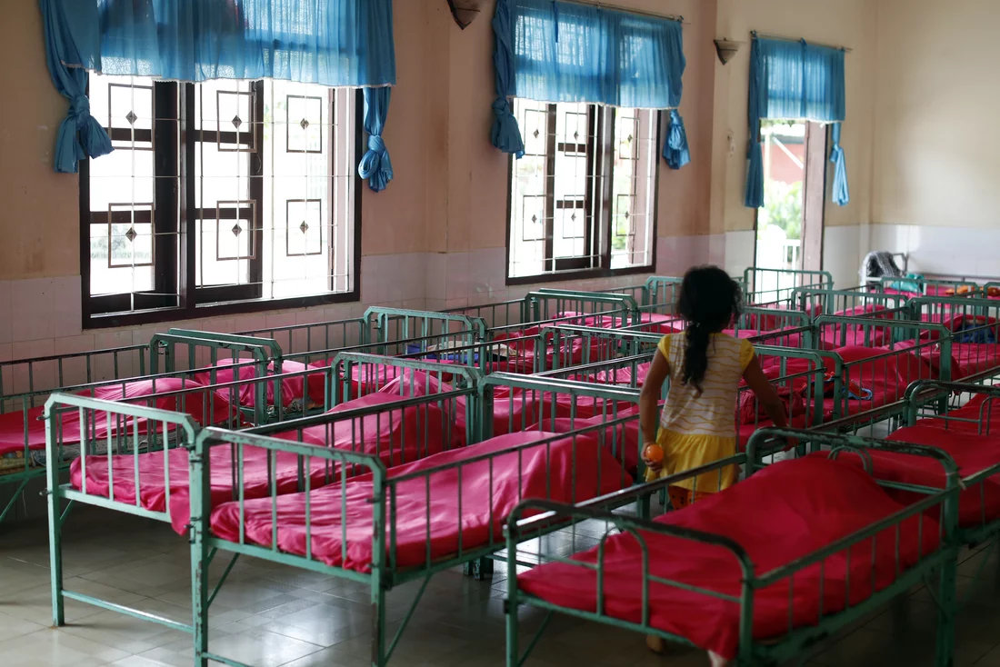

Emily Howe, a lawyer in California, carries around a 5-inch binder, which she calls “the simplified version” of the labyrinthine set of laws that dictate which adoptees have been able to become citizens and which have not.
Howe was adopted from South Korea in 1984, barely young enough to be granted citizenship by the 2000 law. By a twist of luck and timing, this could have been her, she said. So she represents many adoptive families for free.
It shouldn't be a spin of the roulette wheel,” she said. She now asks every adoptee if they know their citizenship status. It gets complicated quickly; if they ask the government and find out they aren't citizens, they tip off authorities to them living here illegally.
Her clients are panicking about what will happen if Trump wins reelection.
“I'm terrified,” a mother named Debbie cried in Howe's San Diego office. “What if he gets back in? I'm hearing him talk about mass deportations.”
Debbie and her husband, Paul, adopted two special-needs children from a Romanian orphanage in the 1990s, and they've been trying to make them citizens almost ever since. The Associated Press is using only the first names of the parents because they fear endangering their adopted children.

Source: Godong/Universal Images Group via Getty
The California couple watched a “20/20” television special about the plight of children there — they called them “unsalvageables,” they didn't learn to read, there wasn't enough food.
The couple was middle-class, with three biological children. But Debbie couldn't sleep thinking about those kids, cold and hungry. So they refinanced their house to bring home two, a boy and a girl.
“We thought we had to get these children out of there. Then we'll deal with what we need to deal with,” Debbie said.
The boy was 10, and so small, just 40 pounds, that the school allowed him in kindergarten. The girl was 14 and legally blind, with limited vision in just one eye. They both had physical and cognitive impairments; the doctors believed the boy suffered fetal alcohol poisoning.
The family was overwhelmed by their needs. Their new son was curious — in another life, he might have been an engineer, Debbie thinks. But in this one, they had to nail the front door shut because he'd wander out at night. He was fascinated by electricity, and couldn't be left alone without fear he'd start a fire.
Howe assures them they did everything they could.
“We thought we did it the right way, we tried to, I hope we did,” Debbie said. “Maybe we were naive. Maybe there was something we missed.”
They consulted with dozens of lawyers, who all said it couldn't be fixed — it was a convoluted calculation of the children's ages, how their birth certificates were written, their visas. They can't tally how many thousands of dollars they've spent.
“It's dumb, it's outrageously dumb, it should not be this monstrous task,” Howe said. “This could be fixed in a month if anyone had the political will to do it.”
Their son, 43, doesn't understand the situation he's in. But their daughter understands. She's a Special Olympian, now 46, with a stack of gold medals. She can't compete in international competitions because she can't get a passport.
“I want to be a citizen really bad,” their daughter said. “I want to be here for a long, long time.”
They've called their legislators. Debbie wept again and again: “My adopted children deserve all the privileges of my birth children. They are no different in our eyes. Why are you looking at them differently?”
Everyone told them not to worry because they aren't the type of people on immigration's radar.